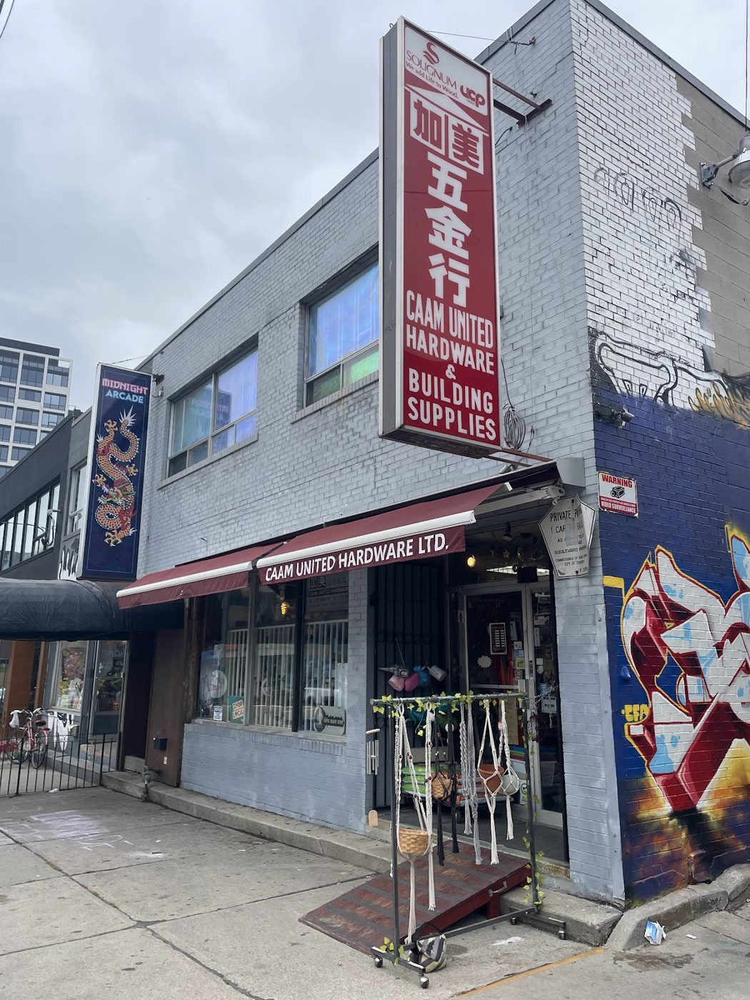

Hardware & building supplies · Kensington Market · Since 1984
Kensington’s family hardware store, since 1984.
Tools, electrical, plumbing, paint, garden supplies and keys cut in minutes, from a family that knows where every screw is and how to use it. Start here before the big box stores.
- Family owned since 1984
- Keys cut in minutes
- Expert DIY advice
- Fair prices
What we carry
Hardware & tools
Fasteners, locks, tools, electrical and plumbing supplies for repairs in and around the house. If they don’t have it, reviewers say staff will tell you where to find it.
Keys, paint & garden
Key cutting (one reviewer is in and out within five minutes), paint and plaster supplies, plus soil, seeds, pots and garden tools, as seen in the shop’s Google photos.
Help with your project
The founder was a contractor, and his daughter builds theatre props. Reviewers describe being shown how to clear a sink clog, and having a stuck fishing-net pole fixed for free.
This list comes from the shop’s Google listing (hardware, electrical, fasteners, garden, keys, kitchen, locks, paint, plumbing and tools), its own description on Google, its photos and its reviews. No prices are listed because the shop doesn’t publish a price list online. Call to check stock.
Our story
Forty years in the Market
Since 1984
Herman, originally from Hong Kong, was a contractor who opened the store in 1984 to go with his contracting business, first on Dundas near Kensington Avenue and, from the mid-’80s, here on Augusta. CAAM is short for its Chinese name, Ga Mei: “Canada America.” Today his daughter Jenny So, who grew up in the store, runs it alongside her parents and relatives.
“I go out of my way to shop here! Amazing, supremely knowledgeable staff, huge selection and great prices.”
Zach Smith, via canadacompanies.net. History from the shop’s Google description and West End Phoenix (“The Big Fix,” May 2024).
What customers say
4.8 ★ from 149 Google reviews (checked Nov 10, 2026). Quotes are word for word. Each one says where it was read: on the Google listing itself, or on a public page that copies reviews. Google shows only a handful of reviews without signing in, so some quotes come from directory copies; one of them doesn’t show reviewer names.
★★★★★
Start here before you go to the big box stores. Everything you need for projects in and around the house. Attentive staff and an impressive selection.
★★★★★
An absolute gem in The Market. A great place to find almost anything and everything you may need to repair something at home. Both staff members that assisted me were super helpful and very personable and knowledgeable. Probably went there 6 or 7 times in the span of 24 hours (old houses always have surprises)! Will definitely go back to just chat with the gentleman at the cash and peruse their aisles!!
★★★★★
This place is Great! Not only friendly and helpful, but super-knowledgeable and not trying to up-sell you. With wide selection - almost everything you need for home DIY, decorating, crafting etc.
AND prices not too bad, given that everything everywhere has gone up in the last few years. Long live CAAM United!!!
★★★★★
The kindest and most helpful staff around. They have all the answers. Store is organized, clean and has everything you may need for small home and garden projects.
A neighbourhood staple, I’m so grateful for this store.
★★★★★
Love this place!!!! They have so much random hardware that you could possibly need, and every time I come here to have keys cut I'm in and out within 5 mins. :)
★★★★★
Amazingly friendly and genuine people who just wanted to do what they could to help me out. Had a problem with a telescopic pole on my fishing net not extending. The screws were unable to be loosened. They fixed it up for free on the spot once finished with (paying) customers, even though it seemed fairly busy at the time. Ended up chatting with the lovely lady in the front for some time while waiting. The lady in the workshop who did the handiwork was helpful and patient. Very grateful (and I'm so sorry I forgot everyone's names)
★★★★★
Family owned business. I had a problem with a sink clog. I went there and the owners daughter showed me what to do, sold me a $5 device, and I went home and fixed it right away. Great service.
★★★★★
This store was my go to for a renovation project. They were so helpful with everything. If they didn’t have the item I needed they would help me find a place to get it. But honestly, they had almost everything. Grateful they are open in the market!
★★★★★
I go out of my way to shop here! Amazing, supremely knowledgeable staff, huge selection and great prices. Can't beat that winning combo. I just wish they were open a bit later than 6pm.
★★★★★
Amazing place, the first (and usually only) place for me when I need hardware. Wide range of items, and most of all, they are always have loads of advice and information on how to proceed with a project. Cannot recommend enough.
★★★★★
The woman at the front is delightful. Knowledgeable and great customer service - go here for any hardware needs!
★★★★★
This place is amazing and really has everything for very reasonable prices.
★★★★★
very nice store. went in to spend literally $1 on screws and they were still very kind and helpful to me
Inside the shop
Real photos from CAAM United Hardware’s public Google listing and its customers’ reviews. Some are cropped from the listing’s 360° views. Tap to enlarge.
Visit the shop
160 Augusta Ave
Kensington Market, Toronto, ON M5T 2L5
| Monday | 10 a.m.–6 p.m. |
|---|---|
| Tuesday | 10 a.m.–6 p.m. |
| Wednesday | 10 a.m.–6 p.m. |
| Thursday | 10 a.m.–6 p.m. |
| Friday | 10 a.m.–6 p.m. |
| Saturday | 10 a.m.–6 p.m. |
| Sunday | Closed |
These are the hours on Google today. Closed Sundays. Street parking and bike parking nearby. Follow the shop on Facebook.